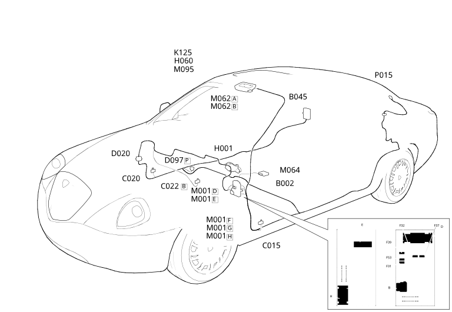

E3060 SUN ROOF LOCATION COMPONENTS
- Path
- Electrical equipment > ELECTRICAL FUNCTIONS > E30 ELECTRICALLY ACTIVATED DEVICES > E3060 SUN ROOF > E3060 SUN ROOF LOCATION COMPONENTS
- Kind
- topic
- Applies to
- all engines; all production periods; only with equipment: Passive Entry
- Interactive page
- https://sloeber94.github.io/elrnDB-lThss/en/#/841007006
Applies to: all engines; all production periods; only with equipment: Passive Entry
Location Components

Components
Component code | Name | Assembly reference |
|---|---|---|
Junction unit under dashboard | - | |
Luggage compartment junction unit (CVB) | 5505A | |
Driver's dashboard earth | - | |
- | ||
Centre dashboard earth | - | |
- | ||
Short circuit coupling | - | |
Ignition switch | - | |
Sun roof switch | - | |
K125 | RAIN, DUSK AND MISTING SENSOR | - |
Body computer | - | |
7040E | ||
Passive entry control unit (NPE) | 5580E | |
Sun roof control unit | 7030B | |
Passive entry control unit RF aerial (NPE) | - |
Topics linked from this page (14)
- B002 Junction unit under dashboard
- B045 Luggage compartment junction unit (CVB)
- C015 Driver's dashboard earth
- C020 Passenger dashboard earth
- C022 Centre dashboard earth
- D020 Dashboard/rear coupling
- D097 Short circuit coupling
- H001 Ignition switch
- H060 Sun roof switch
- M001 Body computer
- M062 Roof control unit (NIM)
- M064 Passive entry control unit (NPE)
- M095 Sun roof control unit
- P015 Passive entry control unit RF aerial (NPE)